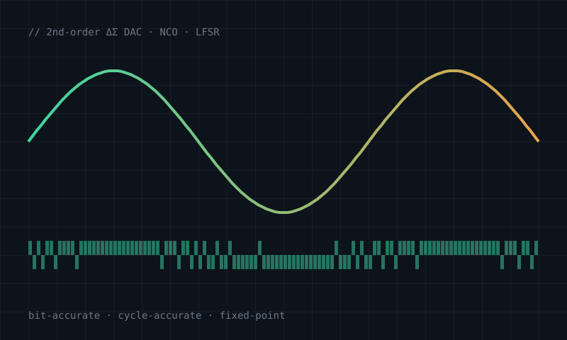

In progress3 media
In progress3 mediaSep 2024 – Present
PicoSatellite — Power & Radio Hardware
Power budgeting and radio-board PCB redesign for a student-built 5 cm × 5 cm satellite that will image Earth's horizon.
View projectNow: ASIC & Instrumentation Intern @ Draper
Electrical engineer heading into silicon.
EE student at Wentworth Institute of Technology (Aug 2027). I've built analog front ends, PCBs, test fixtures and satellite hardware — and now I'm working in digital ASIC design at Draper, aiming for SoC design and verification.
01 // Key skills
02 // Projects
From bench-calibrated analog front ends to FPGA logic and flight hardware. Click any project for the full write-up, photos and video.
In progress3 mediaSep 2024 – Present
Power budgeting and radio-board PCB redesign for a student-built 5 cm × 5 cm satellite that will image Earth's horizon.
View project
Completed Nov 2026
Cycle-accurate fixed-point models of delta-sigma DACs, NCOs and LFSR/GPS code generators, used to verify FPGA designs bit-for-bit.
View project 4 media
4 mediaFeb 2026
A production test fixture that validates six battery-management-system PCBs at once under DC and AC stimulus, with live voltage readout.
View project 7 media
7 mediaDec 2024
Digital-logic elevator controller designed from truth tables and K-maps, minimized to the fewest gates, and run on an Intel DE10-Lite.
View project In progress
In progress2026 – Present
Sole electrical engineer on Wentworth's remote-controlled rover for NASA's Human Exploration Rover Challenge: power, safety and control architecture.
View project 3 media
3 mediaOct 2025
LM335 + OP07 signal-conditioning chain that maps 0–100 °C onto the full Arduino ADC range, calibrated with water-bath tests and finished as a custom PCB.
View project 3 media
3 mediaDec 2025
Electret mic → biased pre-amp → 741 inverting stage that phase-flips ambient noise for destructive interference at the headphones.
View project 2 media
2 mediaDec 2025
Forward/inverse kinematics and motion planning in Python for a 4-DOF Quanser Q-Arm, with RGB-D vision checks and current-sensed gripping.
View project 2 media
2 mediaDec 2025
Continuous-feedback wall-following controller in Python using the robot's IR proximity sensors, with corner handling and wall reacquisition.
View project 4 media
4 mediaApr 2024
Arduino soil-moisture controller that switches a relay-driven pump on calibrated thresholds to water plants without overwatering.
View project03 // Experience
Digital ASIC Design & Instrumentation Electronics Intern
2026 – Present
Cambridge, MA
Split between digital ASIC design and instrumentation electronics. Writing SystemVerilog and testbenches, working in Linux and Git, and supporting electrical integration and test.
Electrical Lead
2026 – Present
Boston, MA
Only electrical engineer on the rover team. Own the power architecture, safety chain, control electronics and schematic.
Electrical Engineering Co-op
2026
Weymouth, MA
Designed and debugged an interconnect test rig that validates six battery-management PCBs at once under DC and AC stimulus.
Facilities Maintenance Engineer Co-op
2025
Massachusetts
Supported maintenance engineering for industrial facility equipment in an aerospace forging plant.
Electrical / Power Subsystem
Sep 2024 – Present
Boston, MA
Power budgeting and state-based energy modeling, KiCad PCB redesign and flight-hardware assembly for a 5 cm picosatellite.
04 // Education
B.S. Electrical Engineering
Boston, MA · Expected Aug 2027
Certification
Professional course · Nov 2026
Bit- and cycle-accurate Python modeling of DSP hardware — delta-sigma DACs, NCOs, LFSRs and GPS C/A codes — and using those models to verify FPGA designs.
See the project05 // What I'm into
How processors, buses, memory and peripherals come together on one die — and what it takes to tape one out.
SystemVerilog, UVM and cocotb testbenches, and golden models that catch bugs before silicon does.
Delta-sigma modulators, ADC/DAC front ends — where my analog background meets digital design.
Static timing analysis, setup/hold closure, and why a design that simulates fine can still fail.
06 // Let's talk
I graduate in August 2027 and I'm open to full-time digital design / verification roles and internships. If you're building chips, I'd like to hear about it.